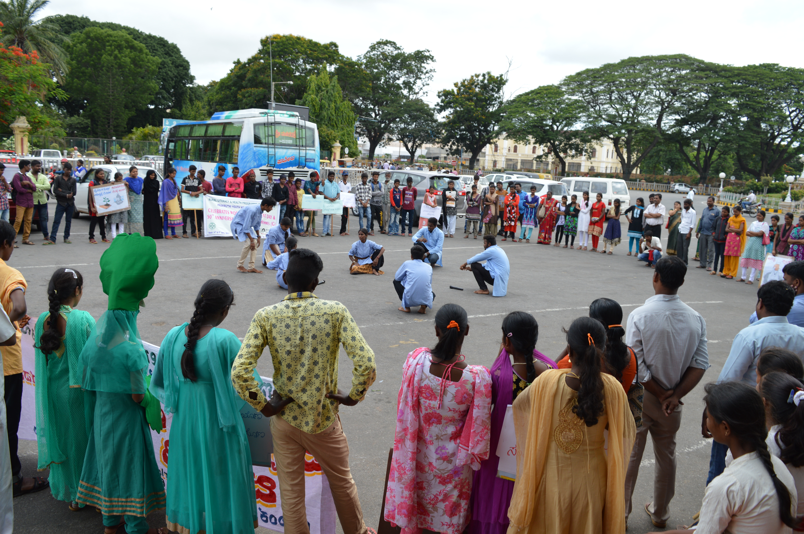
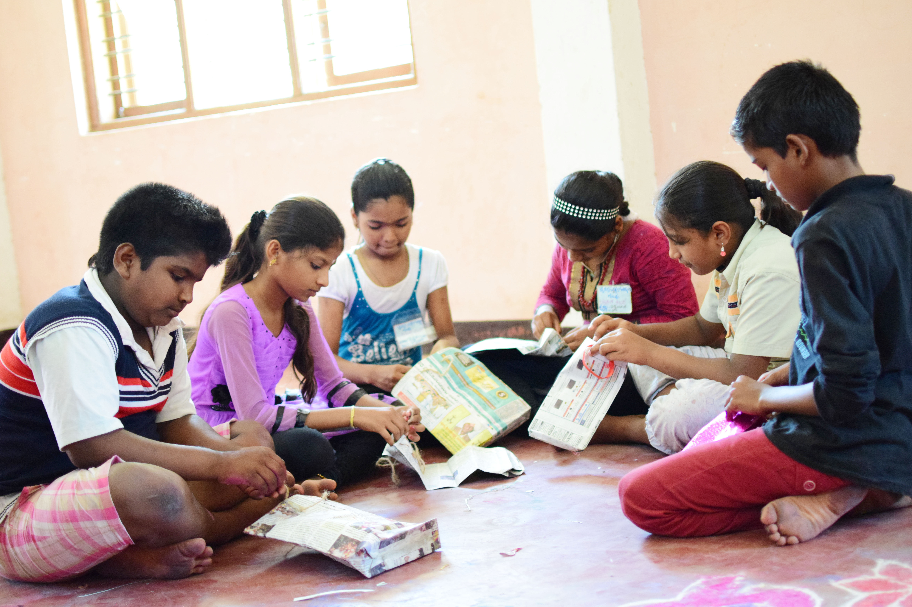
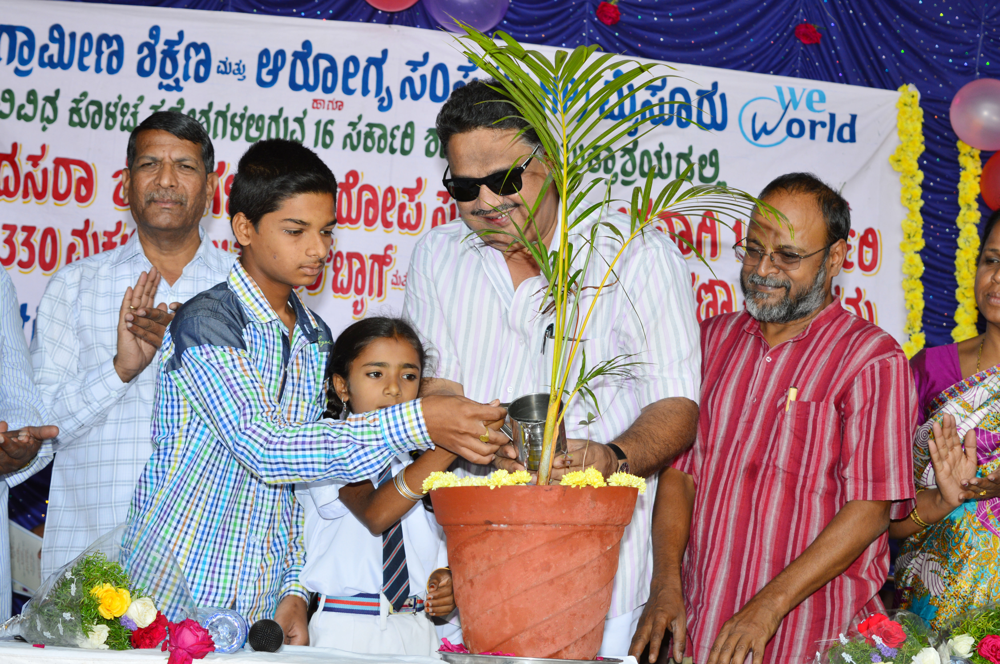
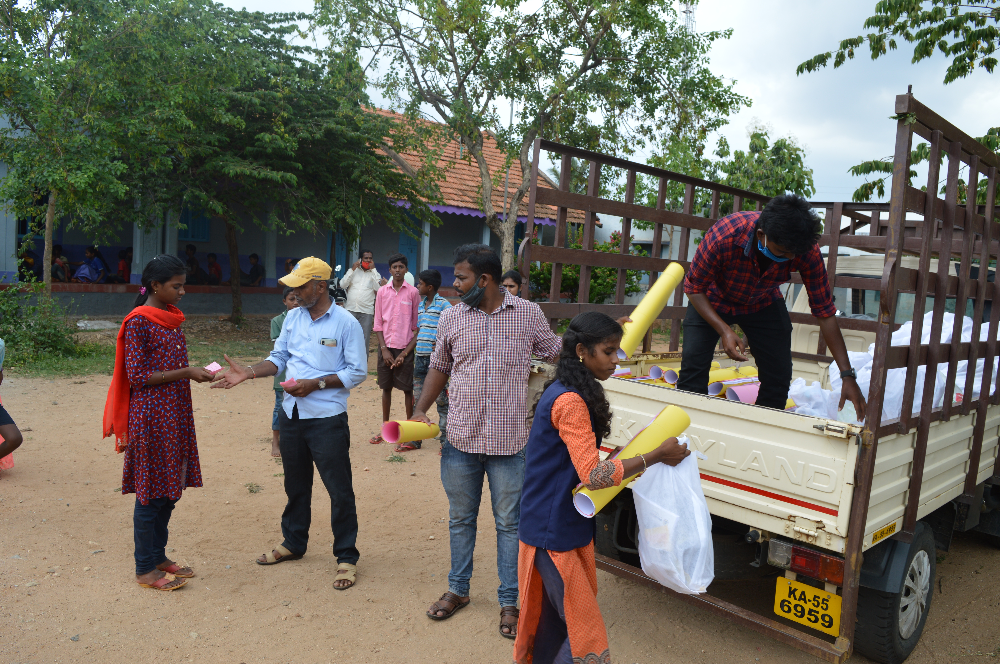
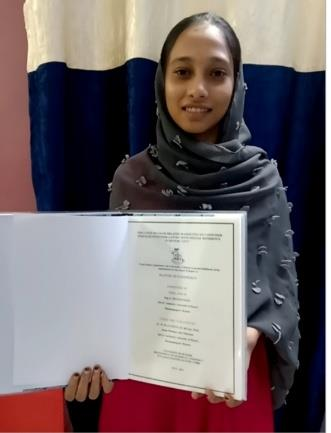

Asha Bhavana Ward to Compassionate Registered Nurse
“Arriving at Asha Bhavana at age 5 in 2009 after severe family crisis, RLHP supported my schooling and Nursing college education. I now serve society with healing hands.”
Inspiring journeys of rescued children, empowered women, and transformed communities across Karnataka.

Healthcare“Arriving at Asha Bhavana at age 5 in 2009 after severe family crisis, RLHP supported my schooling and Nursing college education. I now serve society with healing hands.”

IT Hardware“Born to sanitation workers, I faced bleak prospects until joining Asha Kirana. Scoring 501 in SSLC, I completed my Computer Hardware diploma and build a proud future.”

Child Health“My 3-year-old child Manoj from Kumbrallimata was severely malnourished and weak. RLHP health animators enrolled him in Anganwadi, monitored nutrition, and brought him back to vibrant health.”

Higher Education“Supported by RLHP and ChildFund for 8 years, I completed Pre-University and now pursue my bachelor's degree while my mother thrives with tailoring micro-enterprise.”

Academic Honor“Under the DFC scholarship assistance from ChildFund and RLHP, I completed M.Com with Distinction. I am now preparing for national banking competitive exams with deep gratitude.”